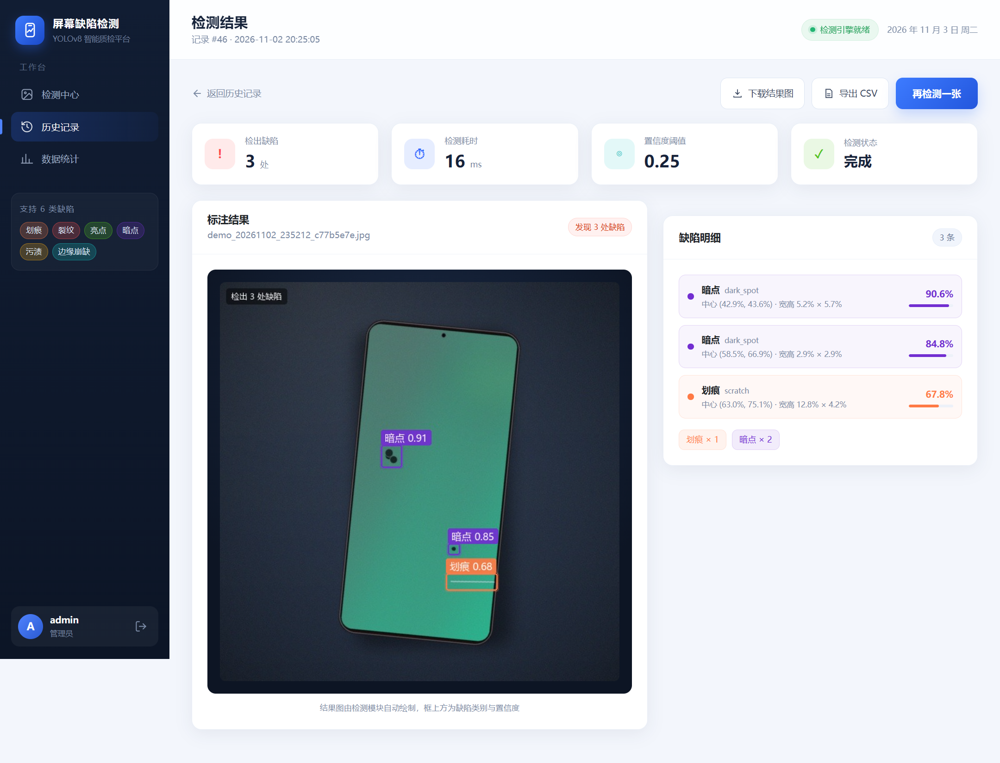
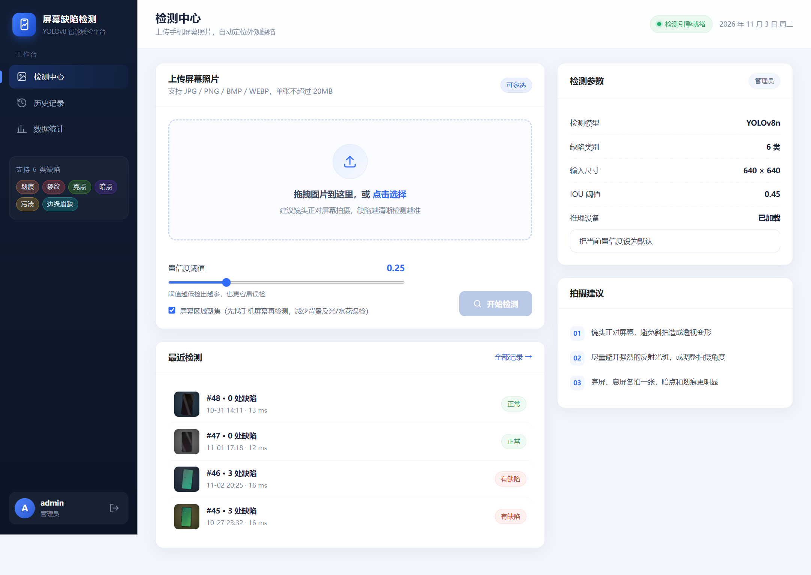
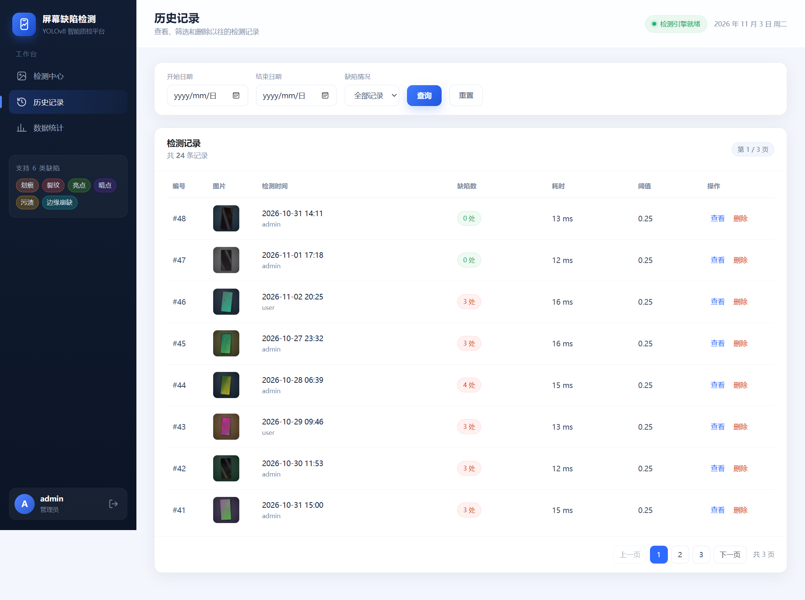
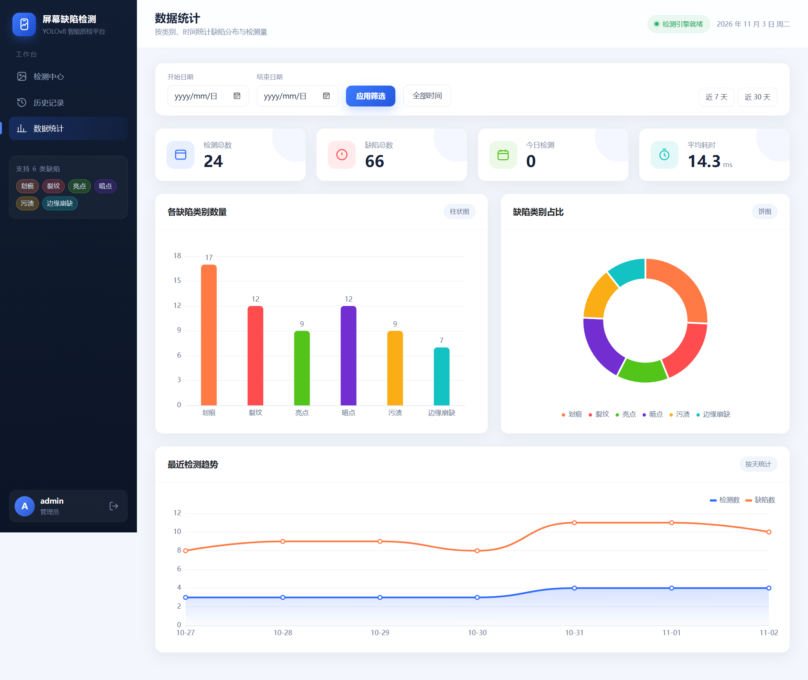
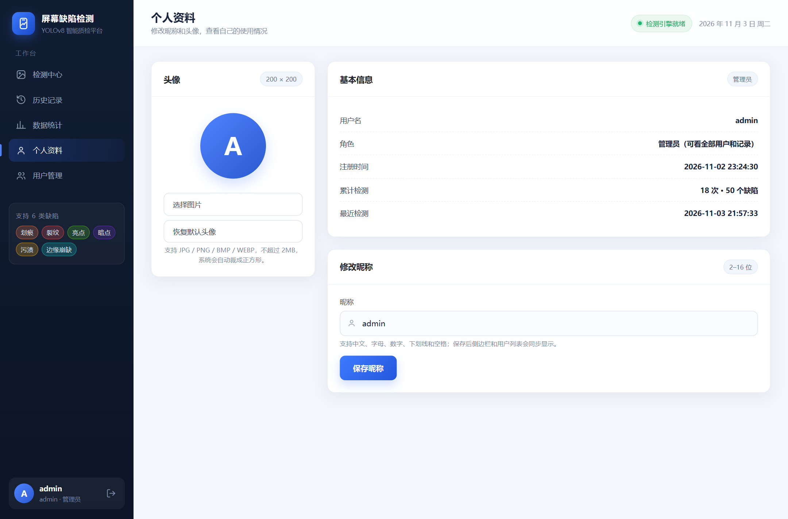
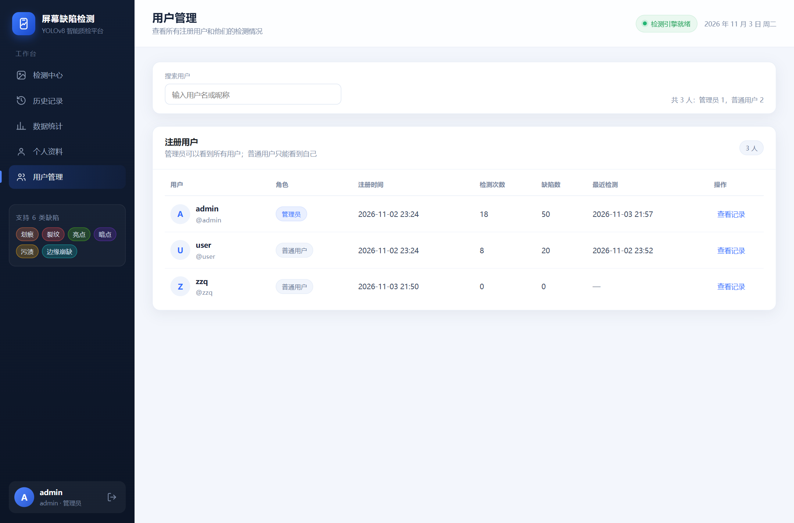
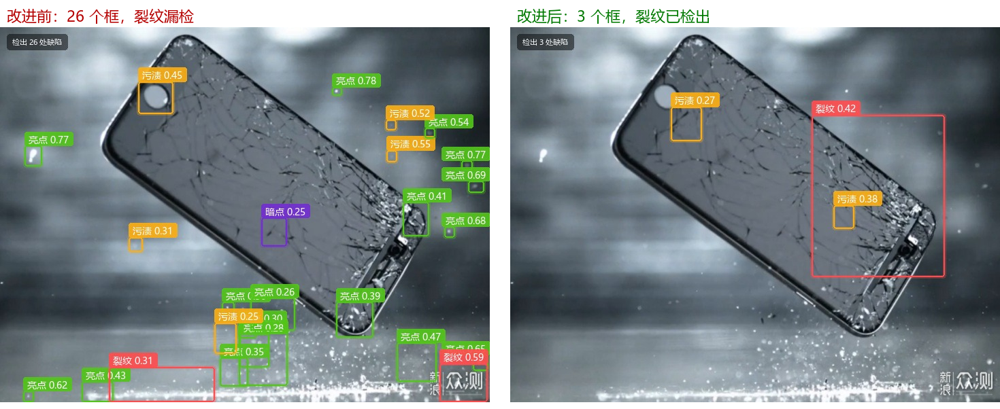
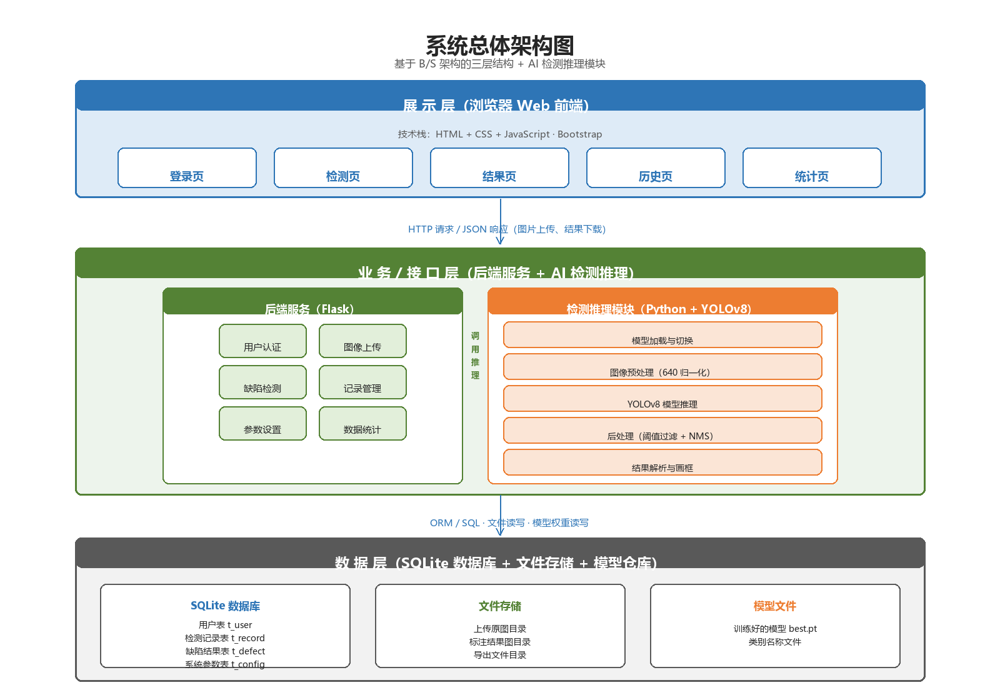
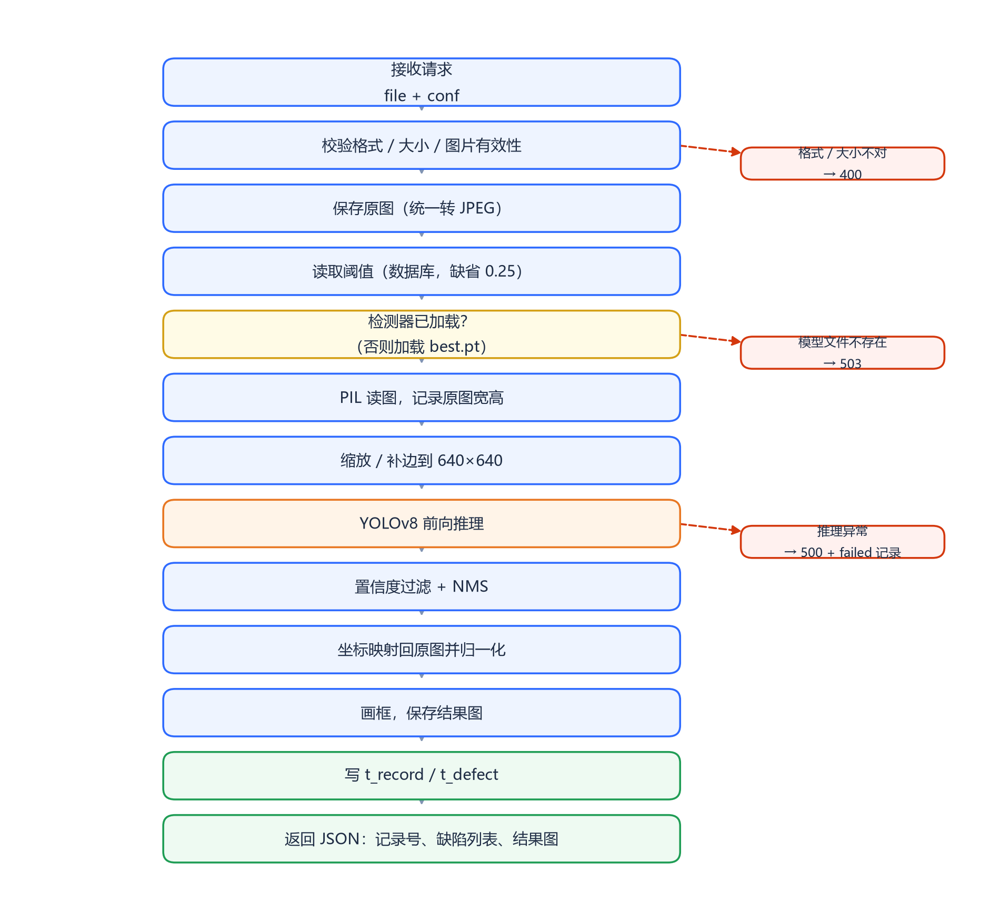

01
图片上传 / 拖拽
支持 JPG、PNG、BMP、WEBP，单张不超过 20MB，可一次选择多张排队检测。
上传一张手机屏幕照片，自动检出划痕、裂纹、亮点、暗点、污渍、边缘崩缺， 给出类别、位置和置信度，并把检测记录保存下来。

面向手机屏幕外观质检工位的半自动 AI 辅助检测原型，不是家用 App，也不是完整产线自动化系统。
支持 JPG、PNG、BMP、WEBP，单张不超过 20MB，可一次选择多张排队检测。
YOLOv8n 检测划痕、裂纹、亮点、暗点、污渍、边缘崩缺，自动画框并标注置信度。
结果图可下载，缺陷明细可导出 CSV；没有缺陷时给出“未发现缺陷”提示。
按时间、有无缺陷、用户筛选，分页查看，支持删除；管理员能看所有用户的记录。
检测总数、缺陷总数、今日检测、平均耗时，以及类别柱状图、饼图和趋势图。
注册、登录、管理员用户列表；昵称 2–16 位，头像 ≤2MB，自动裁成 200×200。
点击任意图片可放大查看。





第一版在真实低对比度碎屏图上检出 26 个框，几乎全是水花和反光；加入困难数据、屏幕区域聚焦和尺寸过滤后，剩 3 个框，主裂纹被框出。

合成缺陷高对比、稀疏；真实裂纹低对比、密集；水珠和反光被当成亮点。
困难数据（蜘蛛网裂纹、2–10 像素缺陷、水珠/反光负样本）+ 混合训练 + ROI + 尺寸规则。
只有一张真实图做过验证，真实产线 mAP 仍需补标注数据后重新评估，不能把合成指标当产线精度。
模型、后台、网页、数据库四层分开，单机即可运行。


需要 Python 3.10+ 和 requirements.txt 里的依赖；本机使用 conda 环境 diffusion-course。
# 1. 安装依赖
pip install -r requirements.txt
# 2. 启动
python run.py
# 或双击 启动系统.bat
# 3. 打开浏览器
http://127.0.0.1:5000注册账号固定为普通用户；管理员账号由初始化脚本创建，不开放注册。
按阶段整理：需求、可行性、概要设计、详细设计。